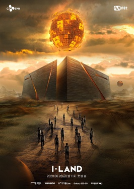
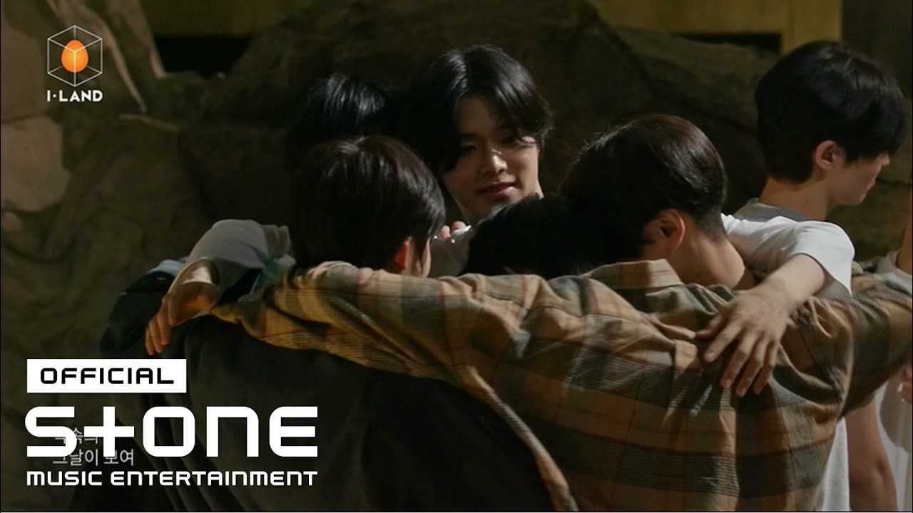

Magnetic
Magnetic is a Korean song created by the artist ILLIT. This song uses the metaphor of the feelings of love and attraction using the magnet. It is a beautiful song about someone who is falling in love and feels that attraction toward a certain someone, and a perfect example it can describe is using the term "magnet". Where two pairs feel the tug towards one another and make the bond more magical and special. This song is also my little sister's favorite, and I respect it tremendously.
 Into the I-Land
Into the I-Land is a Korean song that was created and sung by IU (Right image), and is used as an opening theme that was sung by a group of I-Land applicants (Left image) in Korea. It's a song about reaching out to your goal and running towards it while helping out others who are willing to achieve that same goal you have. It's filled with young, ambitious idols willing to show their determination to reach their goal of being at the top of I-Land; the South Korean boy group reality competition. As inspiring as it is, the bittersweetness begins when nearly all of the young, determined idols fail to reach their goals while the 7 trainees are approved and take the role of the Korean group, ENHYPEN. Nevertheless, the song represents the willingness to step up and join in something big in their life, no matter what risk it takes. With an upbeat melody with original having IU's gentle voice, and the other having 23 ambitious people singing, it's a song filled with unique ups and downs. This is my favorite, no doubt.